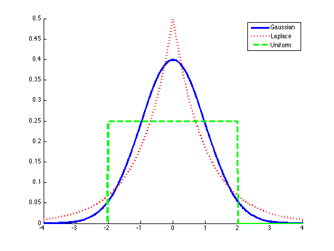
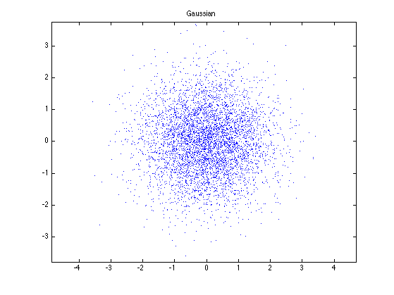
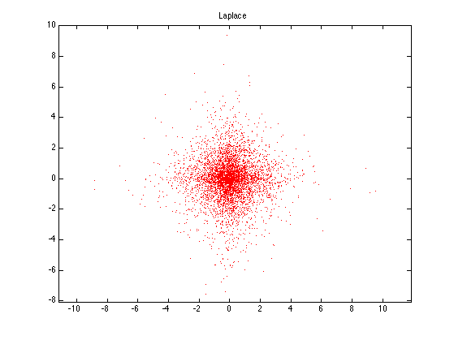
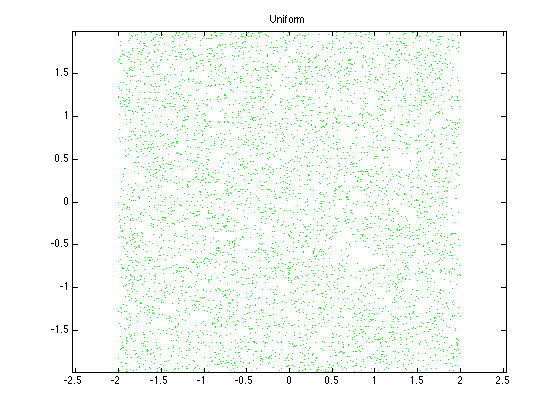

function subSuperGaussPlot()
setSeed(0);
figure; hold on
x = -4:0.01:4;
plot(x,normpdf(x,0,1), 'linewidth', 3);
plot(x,laplacian_pdf(x,0,1),'r:', 'linewidth', 3);
plot(x, unif_pdf(x,-2,2), 'g--', 'linewidth', 3);
printPmtkFigure('supSuperGauss')
legend('Gaussian', 'Laplace', 'Uniform')
n = 5000;
figure;
x1 = normrnd(0,1,n,1);
x2 = normrnd(0,1,n,1);
plot(x1,x2,'b.');
axis equal
title('Gaussian')
printPmtkFigure('supSuperGauss2d')
figure;
x1 = randraw('laplace', [0, 1], n);
x2 = randraw('laplace', [0, 1], n);
plot(x1,x2,'r.');
axis equal
title('Laplace')
printPmtkFigure('supSuperLaplace2d')
figure;
x1 = unifrnd(-2,2,1,n);
x2 = unifrnd(-2,2,1,n);
plot(x1,x2,'g.');
axis equal
title('Uniform')
printPmtkFigure('supSuperUnif2d')
end
function[p] = unif_pdf(x,a,b)
p = zeros(size(x));
ndx = (x>=a) & (x<=b);
p(ndx) = 1./(b-a);
end
function[p] = generalized_gauss_pdf(x,u,a,b)
p = (b/(2*a*gamma(1/b))).*(exp(-(abs(x-u)./a).^b));
end
function[p] = laplacian_pdf(x,u,b)
p = (0.5/b).*exp(-abs(x-u)./b);
end
function[x] = rand_laplacian(u,b,n)
if (nargin < 3)
n = 1;
end
r = rand(n,1)-0.5;
x = r - b.*sign(r).*log(1-2.*abs(r));
end
function[x,rejrate] = rand_generalized_gauss_rej(u,a,b,M,n)
if (nargin < 5)
n = 1;
end
x = zeros(n,1);
k = 1;
rejrate = 0;
for i=1:n
accept = 0;
while (~accept)
xt = normrnd(u,a);
if (rand() < (generalized_gauss_pdf(xt,u,a,b)/(M*normpdf(xt,u,a))))
x(i) = xt;
accept = 1;
else
rejrate = rejrate + 1;
end
k = k + 1;
end
end
rejrate = rejrate/k;
end
   